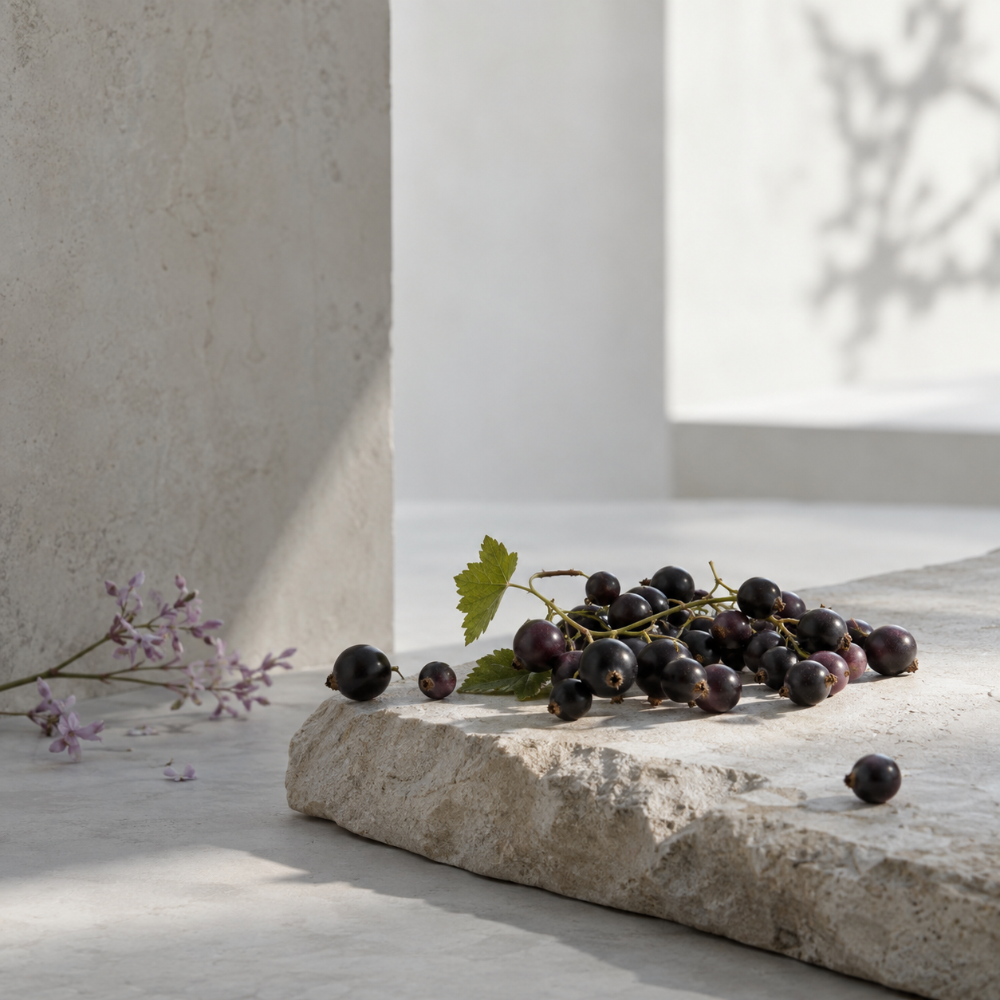
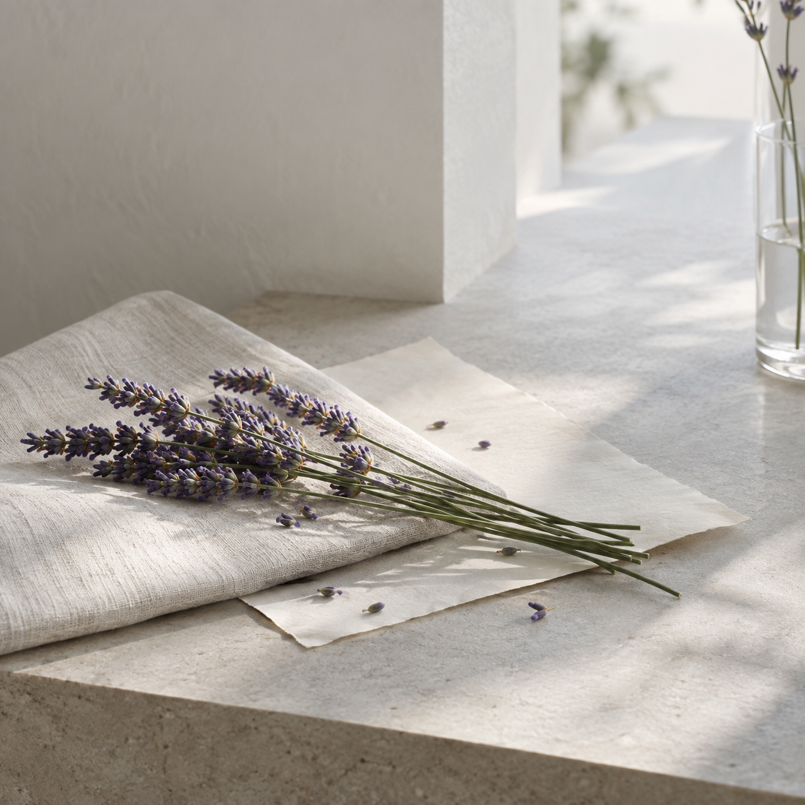
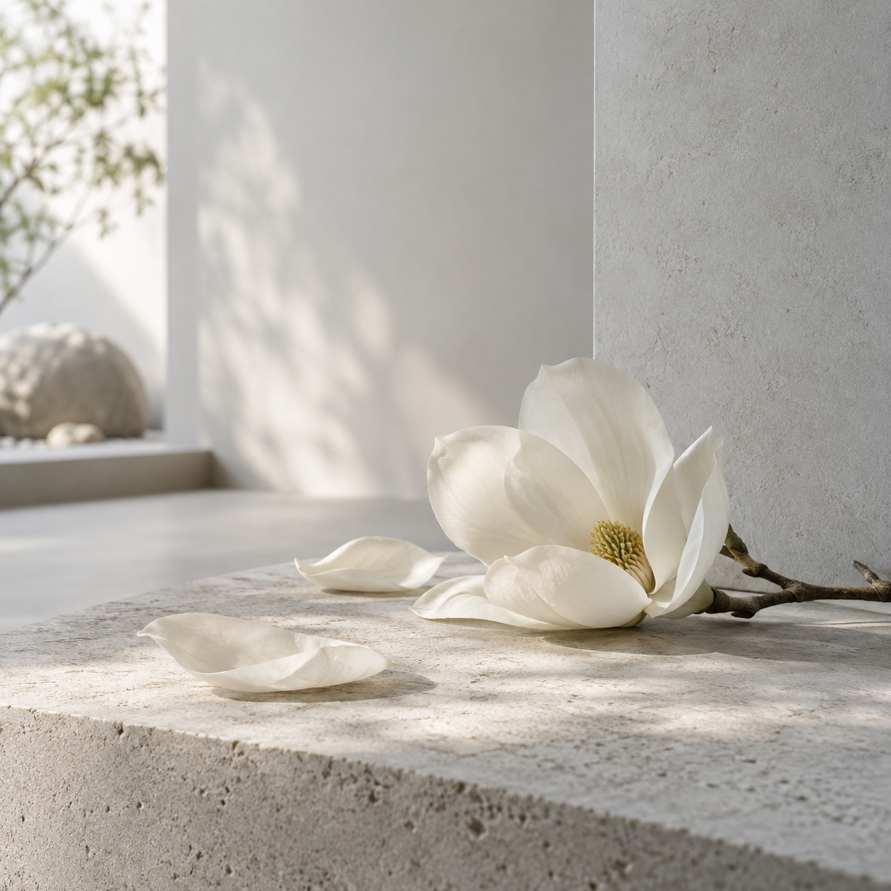
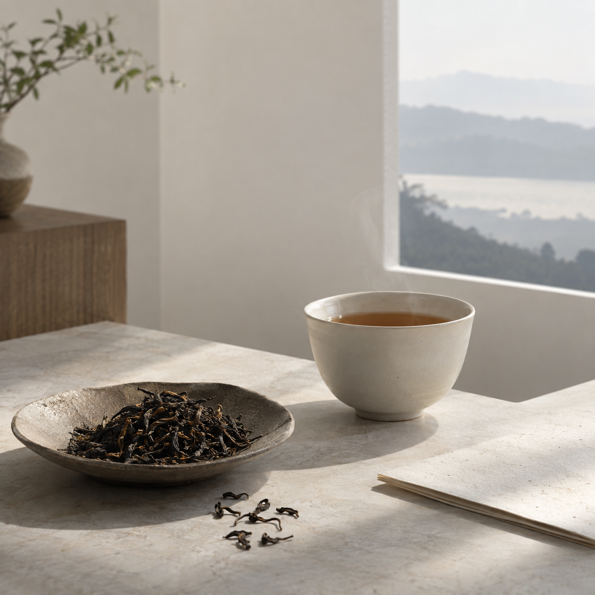
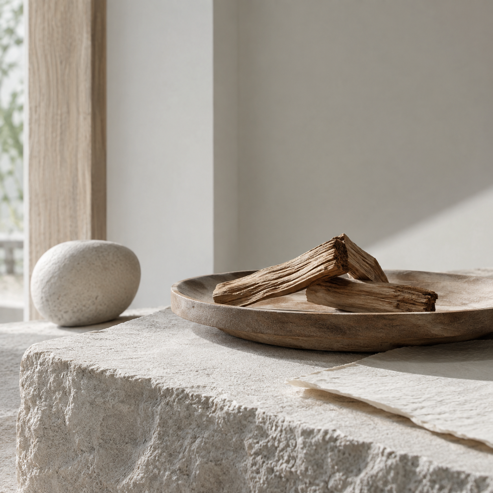
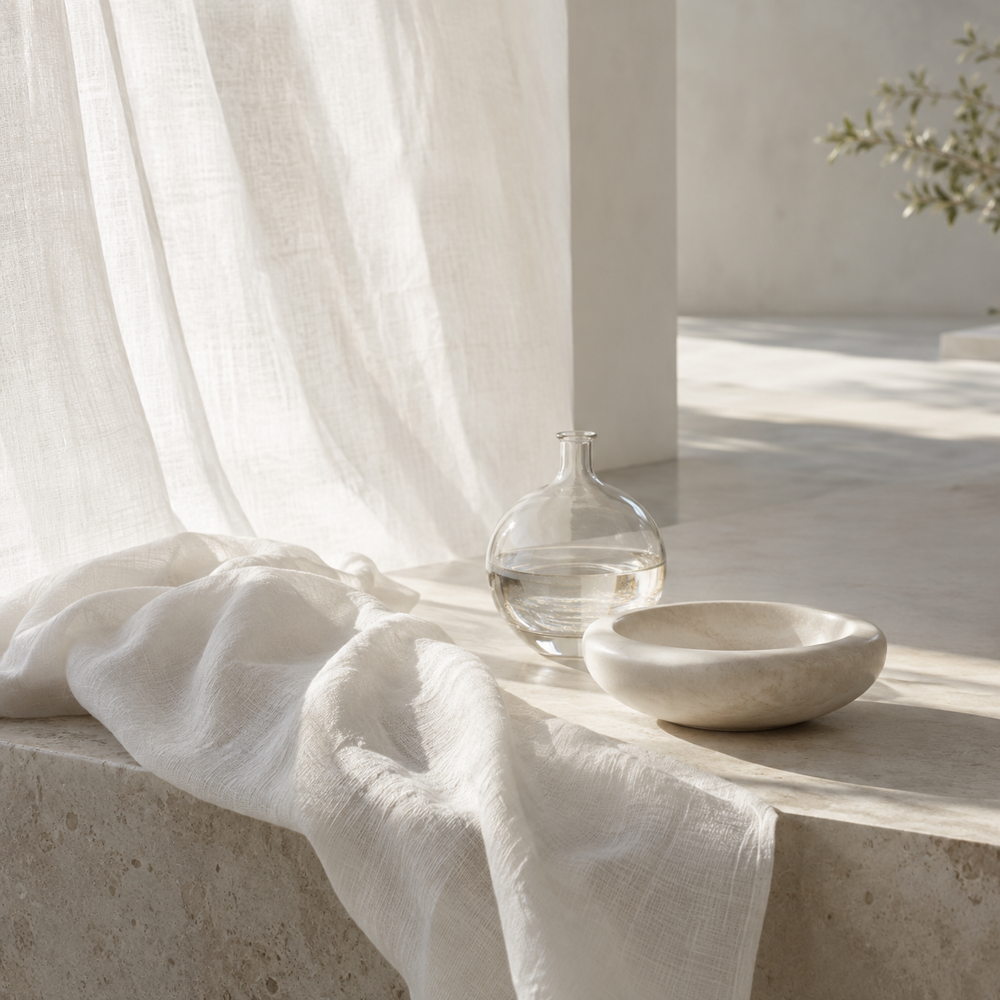

FIND BY SCENT
香りから選ぶ
気分やシーンに合わせて、香りの世界からお選びください。

FRUITSフルーツ系→ CITRUSシトラス系→
CITRUSシトラス系→

HERBALハーバル系→
FLORALフローラル系→ SPICEスパイス系→
SPICEスパイス系→

TEAティー系→
WOODYウッディ系→ IMAGINALイマジナル系→
IMAGINALイマジナル系→

ANIMALアニマル系→ GOURMANDグルマン系→
GOURMANDグルマン系→
 ESSENTIAL OIL精油→
ESSENTIAL OIL精油→
全11件のカテゴリ